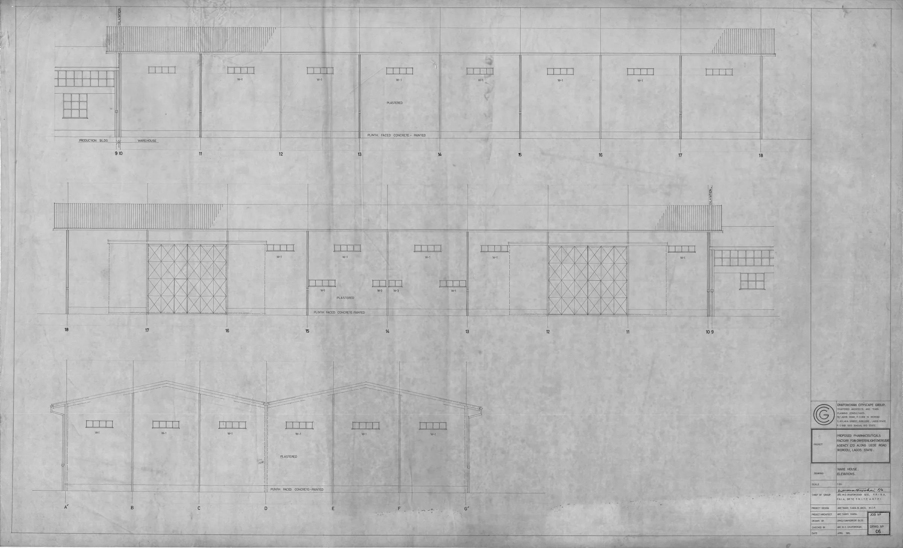

This guide helps professional buyers evaluate Gana V Line for wholesale procurement, covering essential criteria and logistics considerations.
When it comes to sourcing Gana V Line for wholesale, professional buyers face a unique set of challenges. The demand for effective lipolysis products is rising, and ensuring quality while managing costs is paramount. Buyers must navigate supplier options, product specifications, and logistics to make informed decisions.
This guide will provide essential insights into evaluating Gana V Line, helping clinics, spas, resellers, and distributors streamline their procurement process. Understanding the nuances of this product category is crucial for making strategic purchasing decisions.
Key Takeaways
- Understand the product specifications and benefits of Gana V Line to ensure it meets your business needs.
- Evaluate suppliers based on their communication, reliability, and documentation practices.
- Consider packaging and batch visibility to maintain product integrity and compliance.
- Plan your orders around minimum order quantities (MOQ) and potential reorder cycles.
- Always confirm shipping logistics and associated costs before finalizing your order.
What this guide covers
- Understanding Gana V Line
- Buyer scenarios and needs
- Comparison criteria for suppliers
- Checklist before requesting a quote
- Logistics considerations
- MOQ and reorder planning
- Frequently asked questions
What buyers should understand first

Gana V Line is a popular lipolysis product used in aesthetic treatments. It is designed to help reduce localized fat deposits and contour the body. As a professional buyer, it is essential to understand that this product is typically utilized in clinics and spas, where practitioners administer it to clients seeking body sculpting solutions. Familiarity with the product's composition, intended use, and regulatory considerations in your region will help you make informed purchasing decisions.
Gana V Line is often preferred for its efficacy and safety profile, making it a staple in many aesthetic practices. Buyers should be aware of the various formulations available and how they align with their service offerings. Understanding the product's mechanism of action and its positioning in the market can also provide valuable insights into its demand and potential profitability.
Which buyers is this most relevant for?
This guide is particularly relevant for various types of buyers, including:
- Clinics: Medical professionals looking to expand their treatment offerings and enhance patient satisfaction.
- Spas: Aesthetic service providers aiming to enhance their service menu with effective body contouring solutions.
- Resellers: Businesses that distribute beauty and wellness products to end-users, needing to ensure product quality and compliance.
- Distributors: Companies that supply products to clinics and spas, requiring bulk purchasing strategies and reliable supply chains.
Each of these buyer types has specific order planning needs, from initial stock assessments to ongoing reorder strategies, making it essential to evaluate Gana V Line thoroughly. For clinics and spas, understanding client preferences and treatment trends can significantly influence purchasing decisions.
How to compare options before ordering
When considering Gana V Line for wholesale, it is crucial to compare different options based on several criteria:
- Product Type: Ensure you are sourcing the correct variant of Gana V Line that fits your business needs and client expectations.
- Brand Reputation: Research supplier backgrounds and customer reviews to gauge reliability and product quality.
- Packaging: Check if the product packaging meets your storage and handling requirements, ensuring it protects the product during transit.
- Batch/Expiry Visibility: Ensure the supplier provides clear information on batch numbers and expiration dates to maintain compliance and product integrity.
- Supplier Communication: Assess how responsive and informative the supplier is during the inquiry process, as this can impact your purchasing experience.
- Destination Requirements: Consider any specific shipping or customs requirements for your location, which can affect delivery timelines and costs.
Buyer checklist before requesting a quote


- Define your product specifications and quantities based on anticipated demand.
- Research potential suppliers and their reputations to ensure reliability.
- Prepare questions regarding shipping, MOQ, lead times, and payment terms.
- Verify the supplier's documentation practices to ensure compliance with regulations.
- Assess your budget and pricing expectations to align with your financial goals.
- Consider your storage capabilities for incoming products to avoid inventory issues.
Shipping, packing and documentation questions
Logistics play a critical role in the procurement process. When ordering Gana V Line wholesale, consider the following questions:
- What are the shipping options available, and how do they affect delivery times and costs?
- What packaging methods do suppliers use to ensure product safety during transit, and do they comply with industry standards?
- What documentation is required for customs clearance in your region, and how does the supplier assist with this process?
- How does the supplier handle damaged or lost shipments, and what is their policy for replacements?
- Are there additional fees for shipping or handling that you should be aware of, and how can they impact your overall costs?
MOQ, quotation and reorder planning
Understanding minimum order quantities (MOQ) is essential for effective procurement. Here’s how to prepare:
- Determine your initial order quantity based on anticipated demand and your business model.
- Consider product variants you may need to stock to cater to different client preferences.
- Prepare destination details for accurate shipping quotes and to avoid delays.
- Plan for reorder cycles based on sales trends and inventory turnover to maintain consistent stock levels.
- Contact SOLA to confirm current availability and request a wholesale quotation tailored to your needs.
FAQ
What is Gana V Line?
Gana V Line is a lipolysis product used in aesthetic treatments to help reduce localized fat deposits and contour the body.
How do I find reliable suppliers?
Research suppliers through reviews, testimonials, and industry recommendations to ensure reliability and quality.
What should I consider for shipping?
Evaluate shipping options, costs, and documentation requirements to ensure smooth delivery and compliance.
What is MOQ, and why is it important?
MOQ refers to the minimum quantity a supplier requires for an order, impacting your purchasing strategy and inventory management.
How can I prepare for reorders?
Analyze sales trends and maintain a reorder schedule to ensure consistent stock availability and avoid shortages.
Contact SOLA for wholesale quotation via WhatsApp.
Planning a wholesale request?
Send product names, quantities and destination for a tailored discussion.
Contact SOLA on WhatsApp →General educational content for professional buyers. Not medical, legal, regulatory or import advice.
Image sources: Ijede Rd Ikorodu Pharmaceuticals Factory For Crsterlight Overseas Agency Ltd Nigeria 1985 Designed by Michael Olutusen Onafowokan Warehouse Elevations Drwg 06 011.jpg by Onafowokan Michael Olutusen (CC BY-SA 4.0, 3937x2392 px).